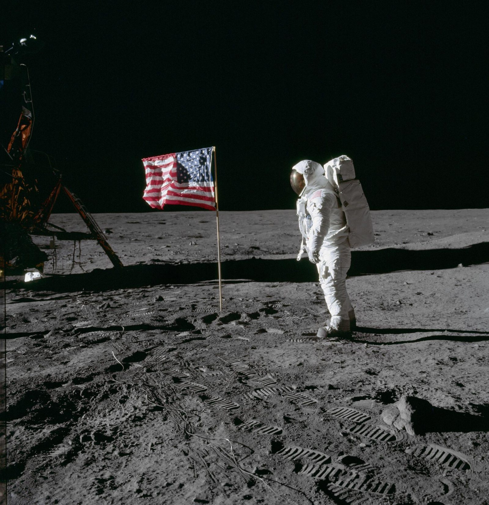
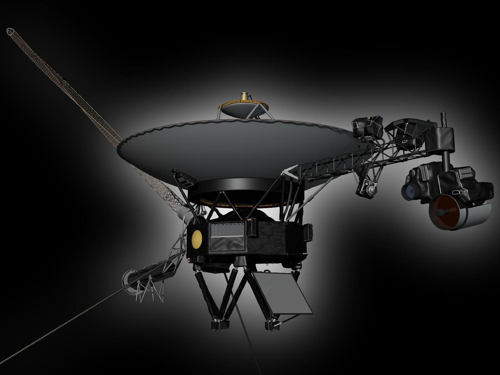

Artemis
Επιστροφή ανθρώπων στη Σελήνη, με στόχο την περιοχή του νότιου πόλου και μόνιμη παρουσία. Το Artemis II θα στείλει πλήρωμα γύρω από τη Σελήνη, το Artemis III θα προσεληνώσει.
Από τον Σπούτνικ στο James Webb
Σε λιγότερο από εβδομήντα χρόνια περάσαμε από την πρώτη τροχιά γύρω από τη Γη στη μελέτη ατμοσφαιρών πλανητών άλλων άστρων. Η εξερεύνηση του διαστήματος είναι μια από τις μεγαλύτερες συλλογικές προσπάθειες της ανθρωπότητας.
Το 1957 ο Σπούτνικ 1 έγινε το πρώτο τεχνητό αντικείμενο σε τροχιά. Τέσσερα χρόνια αργότερα ο Γιούρι Γκαγκάριν έγινε ο πρώτος άνθρωπος στο διάστημα. Το 1969 ο Apollo 11 προσγειώθηκε στη Σελήνη.
Η δεύτερη φάση ήταν η εξερεύνηση με ρομπότ: τα Viking στον Άρη, τα Voyager στους γίγαντες, τα Pioneer και οι αποστολές Magellan στην Αφροδίτη. Η τρίτη φάση, από τη δεκαετία του 1990, έφερε τροχιακούς σταθμούς, τηλεσκόπια όπως το Hubble και ρόβερ που κινούνται στην επιφάνεια του Άρη.
Σήμερα βρισκόμαστε στην τέταρτη φάση: επιστροφή της ανθρωπότητας στη Σελήνη μέσω του προγράμματος Artemis, ιδιωτικές εταιρείες ως φορείς εκτόξευσης και τηλεσκόπια που μελετούν την ατμόσφαιρα εξωπλανητών.
Η Σοβιετική Ένωση θέτει σε τροχιά τον πρώτο τεχνητό δορυφόρο. Ξεκινά η διαστημική εποχή.
Ο πρώτος άνθρωπος στο διάστημα, με το Vostok 1. Μία τροχιά γύρω από τη Γη διάρκειας 108 λεπτών.
Ο Νιλ Άρμστρονγκ και ο Μπαζ Όλντριν περπατούν στη Σελήνη. 600 εκατομμύρια άνθρωποι παρακολουθούν.
Εκτοξεύονται για μια «μεγάλη περιοδεία» στους γίγαντες. Σήμερα ταξιδεύουν στο διαστρικό διάστημα.
Το πρώτο μεγάλο τροχιακό τηλεσκόπιο αλλάζει την αστρονομία: βαθιά πεδία, γέννηση άστρων, μέτρηση της διαστολής.
Ξεκινά η συναρμολόγηση του ISS σε τροχιά, με συνεχή ανθρώπινη παρουσία από το 2000.
Το ρόβερ προσεδαφίζεται στον κρατήρα Gale και βρίσκει στοιχεία για αρχαίες λίμνες γλυκού νερού στον Άρη.
Πρώτη επίσκεψη στον Πλούτωνα, 85 χρόνια μετά την ανακάλυψή του.
Το μεγαλύτερο τηλεσκόπιο στο διάστημα αρχίζει να παρατηρεί: πρώτοι γαλαξίες, ατμόσφαιρες εξωπλανητών.
Μεταξύ 1968 και 1972, εννέα αποστολές Apollo ταξίδεψαν προς τη Σελήνη και έξι προσγειώθηκαν. Δώδεκα άνθρωποι περπάτησαν στη σεληνιακή επιφάνεια. Έφεραν πίσω 382 κιλά δείγματα πετρωμάτων που συνεχίζουν να μελετώνται σήμερα.
Η τεχνολογία ήταν εξαιρετικά περιορισμένη: ο υπολογιστής καθοδήγησης του Apollo είχε περίπου 64 kilobyte μνήμης — λιγότερο από ένα σύγχρονο emoji. Η επιτυχία οφειλόταν σε αυστηρή μηχανική, εκπαίδευση και στην απόφαση του πληρώματος του Apollo 13 να εγκαταλείψει την προσσελήνωση και να επιστρέψει με τη Γη μετά από έκρηξη δεξαμενής οξυγόνου.
Οι δύο Voyager εκτοξεύτηκαν το 1977 για να εκμεταλλευτούν μια σπάνια ευθυγράμμιση των γιγάντων. Ο Voyager 2 επισκέφθηκε και τους τέσσερις: Δία, Κρόνο, Ουρανό και Ποσειδώνα — ο μόνος που το έχει κάνει. Ο Voyager 1 πέρασε από τον Δία και τον Κρόνο και συνέχισε προς τα έξω.
Το 2012 ο Voyager 1 πέρασε την ηλιόπαυση και μπήκε στο διαστρικό διάστημα. Το 2018 ακολούθησε ο Voyager 2. Και οι δύο μεταφέρουν τον Χρυσό Δίσκο, με ήχους, μουσική και εικόνες της Γης, καθώς και οδηγίες για το πώς να βρεθεί η θέση μας στον Γαλαξία.
Το James Webb εκτοξεύτηκε τα Χριστούγεννα του 2021 και λειτουργεί σε απόσταση 1,5 εκατομμυρίου χιλιομέτρων, στο σημείο Lagrange L2. Ο καθρέφτης του, με 18 εξάγωνα τμήματα επικαλυμμένα με χρυσό, έχει διάμετρο 6,5 μέτρων.
Παρατηρεί στο υπέρυθρο, γιατί το φως των πιο μακρινών γαλαξιών έχει «τεντωθεί» από τη διαστολή του σύμπαντος προς μεγαλύτερα μήκη κύματος. Έτσι βλέπει γαλαξίες που σχηματίστηκαν λιγότερο από 300 εκατομμύρια χρόνια μετά τη Μεγάλη Έκρηξη και αναλύει την ατμόσφαιρα πλανητών άλλων άστρων με τη μέθοδο της φασματοσκοπίας διέλευσης.
Ο ISS είναι το μεγαλύτερο ανθρώπινο κατασκεύασμα στο διάστημα: περίπου 420 τόνοι, μέγεθος γηπέδου ποδοσφαίρου, σε τροχιά 400 χιλιομέτρων. Κινείται με 28.000 χλμ/ώρα και ολοκληρώνει μια περιστροφή γύρω από τη Γη σε 90 λεπτά — άρα τα πληρώματα βλέπουν 16 ανατολές την ημέρα.
Είναι κυρίως εργαστήριο: έρευνα για την επίδραση της μικροβαρύτητας στο ανθρώπινο σώμα, στην κρυστάλλωση πρωτεϊνών, στα υλικά και στη φυσιολογία των φυτών. Η συνεχής ανθρώπινη παρουσία από τον Νοέμβριο του 2000 έχει δώσει τα μεγαλύτερα δεδομένα για μακροχρόνια διαμονή στο διάστημα.
Οι επόμενες δεκαετίες θα συνδυάσουν επιστροφή στη Σελήνη, δείγματα από τον Άρη και απευθείας απεικόνιση εξωπλανητών.
Επιστροφή ανθρώπων στη Σελήνη, με στόχο την περιοχή του νότιου πόλου και μόνιμη παρουσία. Το Artemis II θα στείλει πλήρωμα γύρω από τη Σελήνη, το Artemis III θα προσεληνώσει.
Τα δείγματα που συλλέγει το Perseverance στον κρατήρα Jezero θα μεταφερθούν στη Γη για ανάλυση σε εργαστήρια — κάτι που δεν μπορεί να γίνει με ρόβερ.
Διαστημικά τηλεσκόπια με στεφάνη (starshade) θα μπορούσαν να αποκλείσουν το φως του άστρου και να φωτογραφήσουν απευθείας βραχώδεις πλανήτες, αναζητώντας ίχνη βιολογίας.

